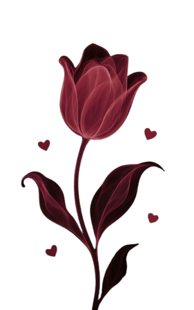

Introduce la seña...
Seña incorrecta.
Samantha... ¿quieres ver por qué tu novio es mejor q todos? ❤️
¿quieres verlo?
❤️ Pq te amo mucho Samantha!
Pq te va tener consentida
Pq es hermoso
Pq te va tratar como ningún otro te trato
Pq es tu cachorrito
Pq eres lo más valioso q tiene

Mentira en realidad es por esto...